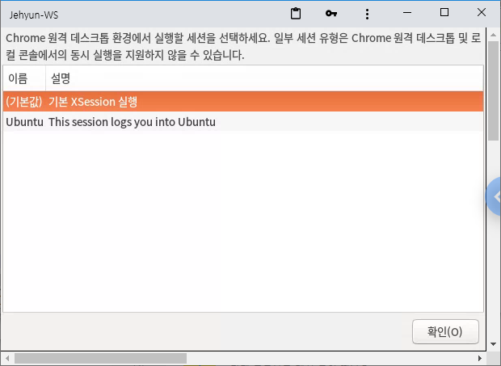
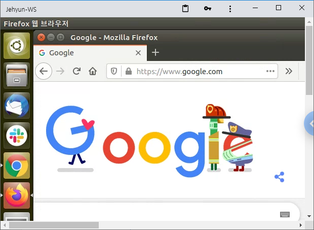

References
- Linux 시스템에 접속해서 일을 할 때 port 접속이나 ssh 방식을 많이 사용합니다.
- 그러나 Linux의 GUI를 활용해야 하거나, port나 ssh가 막힌 경우가 있습니다.
- 이 때 chrome remote desktop이 답이 될 수 있습니다.
- chrome remote desktop Linux 설치는 위 링크를 참고해 주시기 바랍니다.
- 설치 후 외부에서 접속하면 아래와 같은 화면이 나옵니다.

Ubuntu Desktop 가져오기
- 작업하던 Ubuntu Desktop을 그대로 가져오고자 합니다.
- 작동중인 chrome remote desktop을 멈추고,
/opt/google/chrome-remote-desktop/chrome-remote-desktop파일을 수정하고,- 다시 chrome remote desktop을 실행해야 합니다.
1. chrome remote desktop 정지
- 작업 위치로 이동해서 정지시키고, 파일을 백업합니다.
1
2
3$ cd /opt/google/chrome-remote-desktop/
$ chrome-remote-desktop --stop
$ cp chrome-remote-desktop chrome-remote-desktop.org
2. remote desktop 실행 및 설정파일 수정
vi나gedit등으로/opt/google/chrome-remote-desktop/chrome-remote-desktop파일을 엽니다.
2-1. 화면 크기를 나에게 맞게 변경
DEFAULT_SIZES부분을 찾아서 아래와 같이 수정합니다.1
DEFAULT_SIZES = "1920x1080"
2-2. DISPLAY 번호 변경
FIRST_X_DISPLAY_NUMBER부분을 찾아서 0으로 수정합니다 (18.04는 1).1
FIRST_X_DISPLAY_NUMBER = 0
2-3. 추가 DISPLAY를 찾지 않도록 변경
while os.path.exists를 찾아서 아래 줄까지 주석처리합니다.1
2# while os.path.exists(X_LOCK_FILE_TEMPLATE % display):
# display += 1
2-4. X session을 새로 띄우지 않고 기존 것을 사용하도록 변경
self._launch_x_server(x_args)과 아랫줄의self._launch_x_session()를 주석처리합니다.- 그리고 하단에 x_server와 x_session을 론칭할 두 줄을 추가합니다.
1
2
3
4# self._launch_x_server(x_args)
# self._launch_x_session()
display=self.get_unused_display_number()
self.child_env[\"DISPLAY\"]=\":%d\" % display
3. start chrome remote desktop
- 다시 chrome remote desktop을 시작합니다.
1
$ chrome-remote-desktop --start
4. 한 번에 다운로드
긴장한 손으로 하나씩 고치는 것도 일입니다. 한번에 끝냅시다.
- 위 절차를 자동으로 수행하는 script는 여기에서 다운로드 가능합니다.
sudo권한이 필요합니다.1
$ sudo chrome_remote_desktop_monkeypatching.sh
변경이 반영된
chrome-remote-desktop파일은 여기에서 다운로드 할 수 있습니다.
- 마지막 단계,
chrome-remote-desktop --start만 추가로 해 주면 됩니다.
- 띄워놓은 firefox가 잘 보입니다.
[추가] Ubuntu 20.04 무한로그인 버그(?)
[이번에도 어김없이 발생한 우분투 무한 로그인 ubuntu 20.04]https://likecode.tistory.com/310)
How to get rid of Login Screen Loop in Ubuntu ?
- 우분투 20.04를 설치하고 위 파일을 적용했더니, 무한 로그인 버그가 발생했다.
- 아래 방법을 따라 수정할 수 있으니 겁먹지 말자.
1. tty로 들어간다.
Ctrl+Alt+F2를 누른다.F2대신F1~F6까지 모두 가능하다.
2. lightdm을 삭제 후 설치한다.1
2
3sudo apt-get purge lightdm #lightdm이 설치되지 않았다고 해도 이상해하지 말자.
sudo apt-get install lightdm
sudo dpkg-reconfigure lightdm
- 이 때 gdm3와 lightdm을 선택하라는 창이 뜨는데 lightdm을 선택한다.
3. 재부팅한다.1
reboot